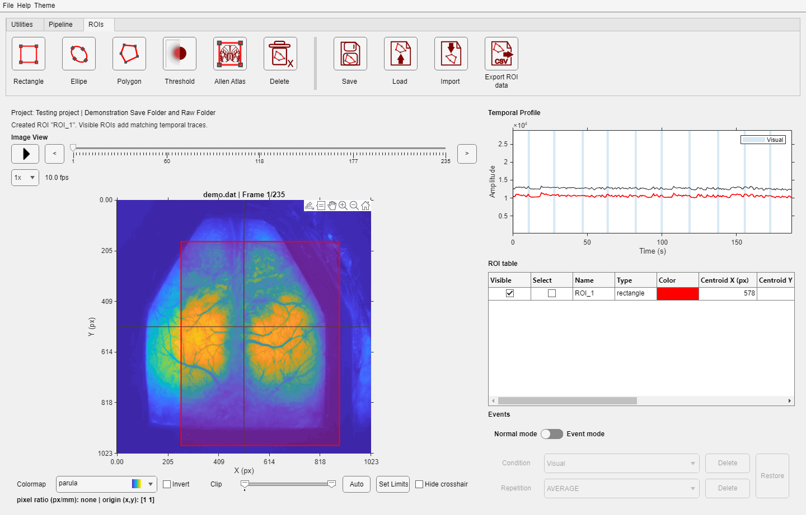

Compare the time course of a selected pixel and visible ROIs without first exporting data. Open Y-X-T data, then create or load at least one ROI.

What is saved?
Trace calculation is read-only and may use a disk cache. CSV export is an option in the ROIs tab under Export ROI data; see Save, load, import, and export. The export does not change the ROI file or imaging data.
For calculations intended for later statistics, run getDataFromROI in a pipeline. Event response features require the ordered workflow split_data_by_event → getDataFromROI with spatial aggregation enabled → calculateResponseFeatures.